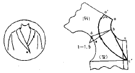

양장기능사 (2002-10-06 기출문제)
1과목: 임의 구분
1. 여러장의 폭을 이어서 만든 스커트를 가장 바르게 말한 것은?
- 고어드 스커트
- 플레어 스커트
- 플리이츠 스커트
- 디바이디드 스커트
(정답률: 67%)

2. 형지(본)넣기 작업이란?
- 형지를 배열하여 형지 모양대로 완성선을 그리는 작업
- 상의, 하의 구별하여 따로 구분하는 작업
- 대, 중, 소로 상품을 구분하는 작업
- 봉제 작업장에서 검사 작업장으로 옮기는 작업
(정답률: 85%)
3. 가위질을 하는 방법 중에서 틀린 것은?
- 얇은 천을 자를 때 주로 가위 끝으로 천을 자른다.
- 두꺼운 천을 자를 때 주로 가위 중간으로 천을 자른다.
- 곡선으로 자를 때는 가위를 반쯤 열고 조금씩 잘라 나간다.
- 각을 자를 때는 가윗날을 크게 벌려 밀고 나아가며 자른다.
(정답률: 82%)
4. 블라우스를 제도할 때 가장 먼저 해야 할 것은?
- 소매
- 앞길
- 뒷길
- 칼라
(정답률: 66%)
5. 스커트 앞 허리 밑에 옆으로 군주름이 생긴다. 보정하는 방법은?
- 옆을 내주고 다트의 위치를 고쳐준다.
- 뒤 다트분을 늘리고 힙을 줄인다.
- 뒤 다트분을 줄이고 힙을 늘린다.
- 뒤 다트분을 줄이고 스커트 아랫 부분을 줄인다.
(정답률: 46%)
6. 다음 중 유차에 대한 설명으로 가장 적당한 것은?
- 앞품과 뒤품의 차이
- 유상동과 상동의 차이
- 뒷소매둘레와 앞소매둘레의 차이
- 앞길이와 상의장과의 차이
(정답률: 54%)
7. 소매 앞 부분에 주름이 생길 때 가봉시의 처리로 가장 적당한 것은?
- 소매산을 높여 준다.
- 소매 중심을 뒤로 이동한다.
- 소매산을 낮추어 준다.
- 소매산 중심을 앞으로 이동한다.
(정답률: 45%)
8. 소매의 앞과 뒤 양쪽으로 군주름이 생기는 이유는?
- 소매산의 높이가 높다.
- 소매 중심점이 앞쪽으로 넘어 왔다.
- 소매산의 높이가 낮다.
- 소매통이 좁다.
(정답률: 56%)
9. 봉비의 원인과 가장 상관이 먼 것은?
- 바늘 끝이 달아서 뭉뚝할 경우
- 가는 바늘에 굵은 실이 끼워졌을 경우
- 두꺼운 원단에 노루발의 압력이 강한 경우
- 실의 흘림에 저항이 있는 경우
(정답률: 64%)
10. 인체의 각 부위별 명칭 및 계측법 중 틀린 것은?
- 어깨너비:좌우 어깨 끝점 사이의 길이를 측정한다.
- 등길이:뒷목점에서 뒤 중심선을 따라 허리둘레선까지 길이를 측정한다.
- 앞길이:옆목점에서 유두점을 지나 허리선까지 측정한다.
- 가슴둘레:겨드랑이 밑으로 줄자를 둘러서 유두 위쪽으로 측정한다.
(정답률: 55%)
11. 블라우스의 길을 본바느질할 때 가장 먼저 바느질해야 할 곳은 어느 부분인가?
- 다트
- 어깨선
- 옆선
- 밑단
(정답률: 84%)
12. 입술단추 구멍에서 입술감은 어느 결이 적당한가?
- 가로결
- 수직결
- 바이어스결
- 어느 결이든 상관없다.
(정답률: 90%)
13. 재봉틀 바늘의 호수는?
- 숫자가 작을수록 바늘이 굵다.
- 숫자와 상관 없다.
- 숫자가 클수록 바늘이 굵다.
- 숫자가 클수록 바늘이 짧고 가늘다.
(정답률: 87%)
14. 다리미를 선택할 때 가장 적합한 것은?
- 바닥이 두꺼운 것
- 다리미가 작은 것
- 모양이 예쁘고 가벼운 것
- 손잡이가 예쁘고 바닥이 볼록볼록한 것
(정답률: 92%)
15. 원형을 활용하는 방법 중 다트 머니퓨레이션(manipulation)의 설명 중 맞는 것은?
- 다트의 위치를 이동시켜 새로운 패턴을 만드는 과정
- 소매산 부근을 많이 부풀려 디자인을 변화시키는 과정
- 이상체형의 변화를 패턴에서 수정하는 작업
- 활동에 불편이 없도록 다트를 변화시키는 작업
(정답률: 75%)
16. 슬랙스의 원형을 이용하여 7부 바지를 만들려면?
- 밑아래로 6cm 내려간 선
- 무릎선에서 7cm 올라간 선
- 무릎선에서 7-12cm 정도 내려간 선
- 발목뼈 선
(정답률: 87%)
17. 총원가에 속하지 않는 것은?
- 적정 이윤
- 제조 원가
- 일반 관리비
- 판매 간접비
(정답률: 66%)
18. 피복제도 기호 중 무릎선을 나타내는 기호는?
- K.L
- N.L
- E.L
- M.H.L
(정답률: 92%)
19. 다음 중 상동 치수를 필요로 하는 것은?
- 슬랙스
- 큐로트 스커어트
- 원피스
- 플레어 스커어트
(정답률: 77%)
20. 뒤 네크라인 아래 부분에 수평 주름이 생기는 원인은?
- 원형보다 등이 굽어 있기 때문이다.
- 원형보다 목이 앞쪽에 있기 때문이다.
- 원형보다 어깨가 높기 때문이다.
- 원형보다 어깨가 낮기 때문이다.
(정답률: 31%)
2과목: 임의 구분
21. 시옷누비는(八字뜨기) 어디에 사용하는가?
- 소매
- 몸판칼라
- 블라우스
- 스커트
(정답률: 58%)
22. 유아복이나 작업복에 많이 쓰이는 바느질 방법은?
- 쌈솔
- 통솔
- 가름솔
- 곱솔
(정답률: 92%)
23. 재봉시 실이 잘 끊어지는 원인과 가장 상관이 먼 것은?
- 실채기 용수철의 결함이 있는 경우이다.
- 바늘과 북의 위치가 불량한 경우이다.
- 바늘과 톱니 타이밍이 불량한 경우이다.
- 전원 콘넥터 접속이 불량한 경우이다.
(정답률: 87%)
24. 본봉 재봉틀로 두껍고 딱딱한 천을 박아줄 때 가장 중요한 조절은?
- 노루발 압력을 강하게 한다.
- 노루발 압력을 약하게 한다.
- 피대를 조절한다.
- 노루발 압력을 조절하지 않아도 된다.
(정답률: 65%)
25. 본봉 땀의 특성으로 거리가 먼 것은?
- 윗실과 밑실은 같은 강도의 실을 써야 한다.
- 땀의 구성이 한 땀별로 독립되어 있어 잘 풀리지 않은 장점이 있다.
- 가죽이나 두꺼운 천의 박음질에는 사용할 수 없다.
- 강도가 별로 문제시되지 않은 부분에 많이 쓰인다.
(정답률: 52%)
26. 그림의 칼라 이름은?

- 리플드 칼라
- 스탠드 칼라
- 피이터 팬 칼라
- 쇼울 칼라
(정답률: 73%)
27. 패턴 배치방법으로 맞는 것은?
- 줄무늬는 옷감 정리에서 줄을 사선으로 정리한다.
- 털이 긴 것은 털의 결 방향이 위로 향하도록 배치한다
- 옷감의 표면이 겉으로 되게 반으로 접어 배치한다.
- 짧은 털이 있는 옷감은 털의 결방향을 위로 배치한다.
(정답률: 85%)
28. 인체계측의 측정항목 중 피계측자가 의자에 앉았을 때 옆허리선에서 바닥까지의 수직거리를 재는 항목은?
- 바지길이
- 앞길이
- 치마길이
- 밑위길이
(정답률: 84%)
29. 피혁을 봉제할 때 가장 적절한 재봉기는?
- 지그재그봉
- 본봉
- 이중환봉
- 편평봉
(정답률: 55%)
30. 제조 원가 계산방법 중 맞는 것은?
- 제조 원가=재료비＋판매 간접비＋이익
- 제조 원가=총원가＋인건비＋일반관리비
- 제조 원가=재료비＋인건비＋제조 경비
- 제조 원가=총원가＋판매 간접비＋제조 경비
(정답률: 89%)
31. 다음은 목화를 상업상으로 분류하여 설명한 것이다. 맞지 않는 것은?
- 이집트 목화는 색깔이 엷은 갈색이 많고 섬유의 길이가 길고 섬유가 고르며 광택이 풍부하다.
- 해도 목화는 미국 동남부 캐롤라이나 주에서 생산되는 것이 가장 좋으며 비단과 같은 광택이 있고, 매우 가는 실을 뽑을 수가 있는 가장 좋은 목화이다.
- 인도 목화는 생산량이 가장 많으며 질이 부드럽고 좋은 것은 수출하고 질이 낮은 것은 자기 나라에서 대부분 소비한다.
- 미국 목화는 일반적으로 색이 희고, 섬유의 길이가 고르며 불순물이 적고 20 - 60 번수 까지 뽑는데 적당하다.
(정답률: 50%)
32. 다음 섬유 중 산, 알칼리에 가장 강한 섬유는?
- 식물성 섬유
- 합성섬유
- 재생섬유
- 반합성 섬유
(정답률: 47%)
33. 직물의 촉감을 부드럽게 하는 공정을 무엇이라 하는가?
- 유포공정
- 축융공정
- 포질고정공정
- 방축가공공정
(정답률: 53%)
34. 피복보관용 용기로서 갖추어야할 조건이 아닌 것은?
- 습기나 열기에 영향을 받지 않는 재질일 것.
- 취급이 용이하고 무거운 것.
- 좀벌레와 같은 해충의 해를 받지 않을 것.
- 피복류를 습윤시키지 않을 것.
(정답률: 92%)
35. 손바닥으로 두들겨 빨기에 가장 적당한 직물은?
- 무명
- 모직
- 모시
- 견
(정답률: 35%)
36. 미싱작업 때 실에 필수적으로 요구되는 성질로서 가장 거리가 먼 것은?
- 유연성
- 고른 굵기
- 마찰 강도
- 표면의 평활성
(정답률: 40%)
37. 비스코스레이온 제조에 있어서 비스코스 방사시에 응고제로 사용하는 것은?
- 황산 및 황산나트륨 용액
- 이황화탄소 용액
- 수산화나트륨 용액
- 황화나트륨 용액
(정답률: 33%)
38. 다음 중 반합성 섬유인 것은?
- 아세테이트
- 비스코스
- 명주
- 폴리에스테르
(정답률: 20%)
39. 다음 중 천연 꼬임이 있는 섬유는?
- 면
- 폴리에스테르
- 나일론
- 명주
(정답률: 70%)
40. 다음 중 신도가 우수하여 고무사의 대용으로 사용되는 섬유는?
- 폴리에스테르
- 폴리우레탄
- 폴리아크릴
- 나일론
(정답률: 78%)
3과목: 임의 구분
41. 평화, 영원, 안식의 느낌을 주는 색은?
- 파랑, 보라
- 녹색, 청록
- 자주. 보라
- 회색, 흰색
(정답률: 61%)
42. 흰색 바탕에 검정색의 가는 줄무늬 옷을 멀리서 보면 회색으로 보인다. 이는 무슨 혼합인가?
- 가법 혼색
- 감법 혼색
- 중간 혼색
- 색료 혼색
(정답률: 42%)
43. 무늬에서 율동감을 얻으려면 어떻게 해야 하는가?
- 색이나 형의 반복
- 균제적인 균형
- 일부분을 특히 강조
- 조화있는 공간설정
(정답률: 63%)
44. 겨울의 의복(의류)배색으로 가장 효과적인 것은?
- 저채도의 고명도 색
- 한색계의 중명도 색
- 난색계의 저명도 색
- 고채도의 저명도 색
(정답률: 66%)
45. 색입체의 종단면도(세로단면도)에 대한 설명 중 옳지 못한 것은?
- 각 색상 중 가장 바깥의 색이 순색이다.
- 가운데 축을 중심으로 대칭인 두색은 보색 관계의 색이다.
- 명도와 채도를 한눈에 알 수 있다.
- 중심은 유채색이고 여러가지 색상순으로 방사형을 이루고 있다.
(정답률: 45%)
46. 다음의 짝이 틀린 것은?
- 가벼운 느낌 - 밝은 색
- 무거운 느낌 - 어두운 색
- 화려한 느낌 - 채도가 높은 색
- 점잖은 느낌 - 채도가 높은 색
(정답률: 91%)
47. 인접한 색이나 혹은 배경색의 영향으로 먼저 본 색이 영향을 미쳐 원래의 색보다 다르게 느끼게 되는 현상은?
- 색의 면적
- 색의 혼합
- 대비 현상
- 색각 이상
(정답률: 74%)
48. 색과 함께 대상의 시각적 경험을 형성하고, 감상적 요소를 나타내는 것은?
- 구성
- 형태
- 자연
- 입체
(정답률: 49%)
49. 색채 계획의 설명이 잘못된 것은?
- 계획의 목적과 대상을 조사하고 아이디어에서 제품까지 디자이너가 의도하는 색을 정확히 분석한다.
- 목적에 맞는 정확한 기술과 방법을 검토하고, 인쇄, 염색, 시공, 제조, 판매 등을 구체화시켜 전달한다.
- 계획의 지시, 제시 등 최종 효과에 대한 관리방법까지 하나의 통합적인 계획이 있어야 한다.
- 색채에 대한 관념을 기능적인 것에서 감각적으로 방향을 바꾸며, 주관적이고 과학적인 연구 자세를 가지도록 해야 한다.
(정답률: 77%)
50. 청색 중에서도 가장 젊고 화려한 색이다. 매우 화려하면서도 침착한 느낌을 주는 색은?
- 시루리언 블루(cerulean blue)
- 코발트 블루(cobalt blue)
- 울트라 마린 블루(ultramarine blue)
- 네이비 블루(navy blue)
(정답률: 39%)
51. 폴리에스테르 직물의 알칼리 감량 가공의 목적은?
- 무게가 증가한다.
- 강력이 증가한다.
- 두께가 증가한다.
- 유연한 촉감을 부여한다.
(정답률: 48%)
52. 단백질을 함유한 얼룩 제거 방법으로 옳지 않는 것은?
- 세제를 이용한다.
- 열탕을 이용한다.
- 효소를 이용한다.
- 얼룩빼기 약제를 이용한다.
(정답률: 52%)
53. 다음 직물 중 보온성이 가장 큰 것은?
- 양단
- 옥양목
- 양모
- 폴리에스테르
(정답률: 79%)
54. 직물의 성능과 의복의 소비 성능이 가장 잘 연결된 것은?
- 흡습성 - 심미성
- 열전도성 - 보온성
- 염색성 - 내구성
- 내추성 - 신체방호성
(정답률: 73%)
55. 다음 중 직접염법에 사용되는 염료가 아닌 것은?
- 배트 염료
- 직접 염료
- 산성 염료
- 염기성 염료
(정답률: 44%)
56. 금속섬유 중 우주과학과 공업용 등 특수용도 및 대전방지용으로도 혼방되는 섬유는?
- 유리섬유
- 스테인레스강 섬유
- 석면
- 루렉스
(정답률: 46%)
57. 편성물에 대한 설명인 것은?
- 함기량이 적다
- 구김이 잘 생긴다.
- 신축성이 적다.
- 유연하다.
(정답률: 55%)
58. 다음 가공에서 방추가공에 속하지 않는 가공은?
- 런던슈렁크가공(London Shrunk finish)
- 워시앤드웨어가공(Wash & wear finish)
- DP가공(Durable press finish)
- PP가공(Permanent press finish)
(정답률: 46%)
59. 합성세제에 소량의 비누를 배합하여 거품생성을 억제한 세제는?
- 중질세제
- 액체세제
- 저포성세제
- 제포성세제
(정답률: 40%)
60. 신사복, 숙녀복 등의 심지로 쓰이며 의류 부자재로 쓰이는 직물은?
- 면직물
- 모직물
- 마직물
- 부직포
(정답률: 79%)